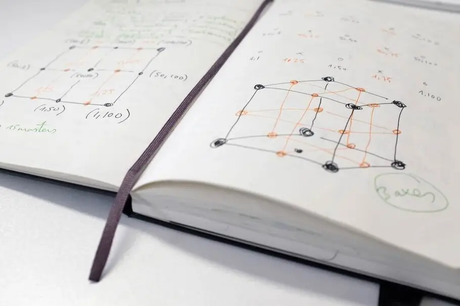

FALLSTUDIE · MONOTYPE
Das erste variable Font-Logo der Welt
Fontsmith und VBAT Amsterdam entwickelten für WPP ein Logo, dessen Letterformen sich per Wärmekamera in Echtzeit an menschliche Interaktion anpassen – Farbe, Form und Weight als lebendige Reaktion auf den Raum. Variable Font-Technologie wird damit erstmals zur identitätsstiftenden Architektur.
Monotype Labs · Fallstudie lesen →